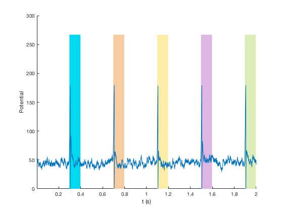
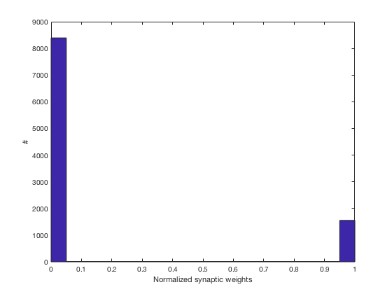
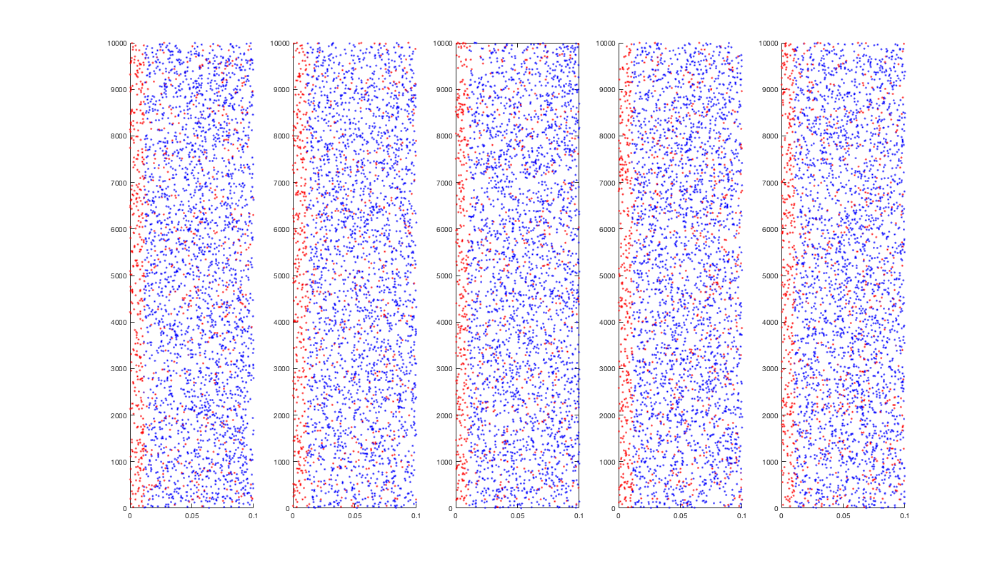

This code was used in: Masquelier & Kheradpisheh (2018) Optimal localist and distributed coding of spatiotemporal spike patterns through STDP and coincidence detection. Frontiers in Computational Neuroscience.
with Matlab R2016b
Aug 2018
Send any questions to timothee.masquelier at cnrs.fr
The code is in STDP/src
The main script in STDP/src/main.m
It has a long header with some info.
The parameters are gathered in param.m
The current values correspond to the optimal for P=5 patterns (see Table 1 in the paper)
The simulation takes around 15 min (depending on your system).
plots.m is launched at the end of main.m to plot the results (similar to Figure 6 in the paper):
  perf.m computes some performance indicators mean_perf.m averages batch results (after running batch.py)
batch.py is a Python script that launches multiple threads of main.m with different random seeds (see its header for more information)
The data is read/written in STDP/data/